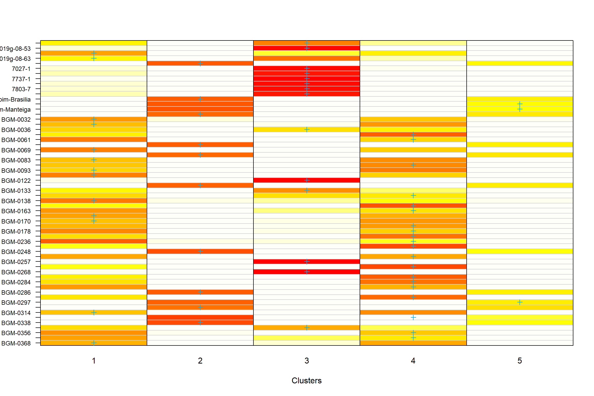

Last updated: 2023-06-07
Checks: 6 1
Knit directory:
~/Documents/GitHub/Diversidade-gen-tica-e-identifica-o-de-regi-es-gen-micas-associadas-ao-tamanho-dos-gr-nulos-de-amid/
This reproducible R Markdown analysis was created with workflowr (version 1.7.0). The Checks tab describes the reproducibility checks that were applied when the results were created. The Past versions tab lists the development history.
The R Markdown file has unstaged changes. To know which version of
the R Markdown file created these results, you’ll want to first commit
it to the Git repo. If you’re still working on the analysis, you can
ignore this warning. When you’re finished, you can run
wflow_publish to commit the R Markdown file and build the
HTML.
Great job! The global environment was empty. Objects defined in the global environment can affect the analysis in your R Markdown file in unknown ways. For reproduciblity it’s best to always run the code in an empty environment.
The command set.seed(20230313) was run prior to running
the code in the R Markdown file. Setting a seed ensures that any results
that rely on randomness, e.g. subsampling or permutations, are
reproducible.
Great job! Recording the operating system, R version, and package versions is critical for reproducibility.
Nice! There were no cached chunks for this analysis, so you can be confident that you successfully produced the results during this run.
Great job! Using relative paths to the files within your workflowr project makes it easier to run your code on other machines.
Great! You are using Git for version control. Tracking code development and connecting the code version to the results is critical for reproducibility.
The results in this page were generated with repository version 01548a7. See the Past versions tab to see a history of the changes made to the R Markdown and HTML files.
Note that you need to be careful to ensure that all relevant files for
the analysis have been committed to Git prior to generating the results
(you can use wflow_publish or
wflow_git_commit). workflowr only checks the R Markdown
file, but you know if there are other scripts or data files that it
depends on. Below is the status of the Git repository when the results
were generated:
Ignored files:
Ignored: .RData
Ignored: .Rhistory
Ignored: .Rproj.user/
Untracked files:
Untracked: Aq_in.txt
Untracked: Aq_out.txt
Untracked: Aq_out2.txt
Untracked: analysis/figure/cap1.Rmd/
Untracked: output/BLUPS.RData
Untracked: output/BLUPS2.Rdata
Untracked: output/Cluster_a_priori.txt
Untracked: output/Cluster_a_priori2.txt
Untracked: output/Clusters.txt
Untracked: output/Clusters2.txt
Untracked: output/Correlacao.txt
Untracked: output/Correlacao2.txt
Untracked: output/Prob_a_posteriori.txt
Untracked: output/Prob_a_posteriori2.txt
Untracked: output/boxplot_violine.tiff
Untracked: output/boxplot_violine2.tiff
Untracked: output/cluster.png
Untracked: output/cor_heatmap.png
Untracked: output/cor_heatmap2.png
Untracked: output/correlation.png
Untracked: output/correlation2.png
Untracked: output/density_BLUPS.tiff
Untracked: output/density_BLUPS2.tiff
Untracked: output/mean_germ_cluster.txt
Untracked: output/mean_germ_cluster2.txt
Untracked: output/parametros.csv
Untracked: output/parametros2.csv
Untracked: output/varcomp.tiff
Untracked: output/varcomp2.tiff
Untracked: output/vcomp.csv
Untracked: output/vcomp2.csv
Unstaged changes:
Modified: Apresentação_Silvia_Cap1.pptx
Modified: analysis/cap1.Rmd
Note that any generated files, e.g. HTML, png, CSS, etc., are not included in this status report because it is ok for generated content to have uncommitted changes.
These are the previous versions of the repository in which changes were
made to the R Markdown (analysis/cap1.Rmd) and HTML
(docs/cap1.html) files. If you’ve configured a remote Git
repository (see ?wflow_git_remote), click on the hyperlinks
in the table below to view the files as they were in that past version.
| File | Version | Author | Date | Message |
|---|---|---|---|---|
| html | ccf9d82 | WevertonGomesCosta | 2023-06-06 | Add index, about and license html |
| Rmd | ff64363 | WevertonGomesCosta | 2023-06-06 | Update cap1.Rmd and add dados_RVA_final |
| html | 4cc1be4 | WevertonGomesCosta | 2023-06-06 | add cap1.html |
| Rmd | b342d26 | WevertonGomesCosta | 2023-06-06 | Updates Scrips cap1 and cap2 |
Este projeto tem como objetivo realizar uma análise da diversidade genética do tamanho dos grânulos de amido na cultura da mandioca. Serão utilizados dados coletados em diferentes anos, visando identificar a variação existente nos genótipos da mandioca.
Nesta análise, utilizaremos os seguintes pacotes do R:
# Pacotes para manipulação e visualização de dados
library(tidyverse) # Conjunto de pacotes para manipulação e visualização de dados
library(DataExplorer) # Ferramentas para análise exploratória de dados
library(kableExtra) # Melhorias para a criação de tabelas
library(reshape2) # Ferramentas para transformação de dados em formato longo ou amplo
# Pacotes para análise estatística
library(metan) # Meta-análise
library(factoextra) # Ferramentas para análise de fatores e agrupamentos
library(rstatix) # Extensões para análise estatística com ênfase em visualizações gráficas interativas
library(cvTools)
library(adegenet)
# Pacotes para visualização de dados
library(RColorBrewer) # Esquemas de cores personalizados
library(corrplot) # Visualização de matrizes de correlação
library(gplots) # Ferramentas para visualização de dados
library(ggthemes) # Temas adicionais para gráficos ggplot2
library(GGally) # Ferramentas para visualização de gráficos de matriz com o ggplot2
library(ggstatsplot) # Gráficos estatísticos interativos
library(pals) # Paletas de cores personalizadas
# Pacotes para paralelização e iteração
library(doParallel) # Paralelização de tarefas em R
library(foreach) # Funções de iteração
# Pacotes adicionais para gráficos e estatísticas
library(compiler) # Compilação de funções para melhorar a velocidade de execução
library(scatterplot3d) # Gráficos de dispersão em 3D
library(ComplexHeatmap) # Visualização de dados complexos em heatmap
library(circlize) # Visualização circular de dados
library(dendextend) # Extensões para manipulação de dendrogramas
library(PMCMRplus) # Comparação em pares
library(rstatix) # Extensões para análise estatística com ênfase em visualizações gráficas interativas
library(pals) # Paletas de cores personalizadas
library(reshape2) # Ferramentas para transformação de dados Nesta etapa, serão realizadas as seguintes tarefas:
Os dados são lidos a partir do arquivo “dados_RVA.xlsx” e passam por um processo de pré-processamento. Isso inclui a limpeza dos nomes das colunas, a seleção das variáveis relevantes, a transformação dos tipos de dados, a remoção de valores ausentes e o cálculo da média para as variáveis numéricas. Também são realizadas outras transformações nos dados, como a conversão de fatores e a filtragem de registros com valores inválidos.
nomes_corretos <-
readxl::read_xlsx("data/Label Taxa nome dos clones GBS DART CHIP.xlsx") %>%
mutate_if(is.logical, as.character) %>%
pivot_longer(cols = c(2, 7:13),
names_to = "synonyms",
values_to = "BAD_NAME") %>%
select(`GOOD NAME`, BAD_NAME) %>%
rename(amostras = BAD_NAME) %>%
count(`GOOD NAME`, amostras) %>%
na.omit() %>%
select(1,2)
dados <- readxl::read_xlsx("data/dados_RVA_final.xlsx") %>%
janitor::clean_names() %>%
select(amostras, ano, ensaio, repeticao:pasting_temp, count:min_feret) %>%
mutate_if(is.character, as.factor) %>%
left_join(nomes_corretos) %>%
mutate(repeticao = as.factor(ifelse(repeticao %% 2 == 0, 1, 2)),
ano = as.factor(ano),
amostras = ifelse(is.na(`GOOD NAME`), amostras, `GOOD NAME`)) %>%
group_by(amostras, ano, ensaio, repeticao) %>%
summarise_if(is.numeric, mean, na.rm = TRUE) %>%
ungroup() %>%
distinct()names1 = c(
"pasting_temp" = "Temperatura de empastamento (°C)",
"setback" = "Tendência a retrogradação (cP)",
"final_visc" = "Viscosidade final (cP)",
"breakdown" = "Quebra de viscosidade (cP)",
"min_visc_afheat" = "Viscosidade mínima após o aquecimento a 95 °C (cP)",
"peak_visc" = "Viscosidade de pico ou máxima (cP)"
)
names2 = c(
"angle" = "Ângulo",
"area" = "Área",
"circularidade" = "Circularidade",
"count" = "Contagem",
"feret" = "Feret",
"feret_angle" = "Feret Ângulo" ,
"feret_x" = "Feret x" ,
"feret_y" = "Feret y" ,
"major_e" = "Maior E",
"min_feret" = "Min Feret",
"minor_e" = "Menor E",
"percent_area" = "Área percentagem",
"perimetro" = "Perimetro",
"solidity" = "Solidity",
"total_area" = "Área Total"
)Nesta etapa, é realizada a contagem de genótipos que foram avaliados para cada ano.
# Contagem de genótipos
dados2 <- dados %>%
count(amostras) %>%
count(n) %>%
arrange(n)
# Tabela com contagem de genótipos
dados2 %>%
kbl(
escape = FALSE,
align = 'c',
col.names = c("Nº de Genótipos", "Contagem")
) %>%
kable_classic(
"hover",
full_width = FALSE,
position = "center",
fixed_thead = TRUE
)| Nº de Genótipos | Contagem |
|---|---|
| 1 | 169 |
| 2 | 872 |
| 3 | 29 |
| 4 | 102 |
| 5 | 1 |
| 6 | 7 |
| 8 | 1 |
A maioria dos genótipos foram repetidos em mais de um ano, o que é desejável para a análise.
Nesta etapa, é realizada a contagem do número de genótipos para cada ano. O objetivo é identificar a quantidade de genótipos presentes em cada ano de coleta dos dados.
# Contagem de genótipos por ano
dados2 <- dados %>%
count(ano, amostras)
# Tabela com contagem de genótipos por ano
dados2 %>%
group_by(ano) %>%
summarise(`Nº de genótipos` = length(amostras)) %>%
kbl(
escape = FALSE,
align = 'c',
col.names = c("Ano", "Nº de genótipos")
) %>%
kable_classic(
"hover",
full_width = FALSE,
position = "center",
fixed_thead = TRUE
)| Ano | Nº de genótipos |
|---|---|
| 2011 | 476 |
| 2012 | 383 |
| 2013 | 171 |
| 2017 | 7 |
| 2018 | 3 |
| 2019 | 101 |
| 2020 | 102 |
| 2021 | 73 |
| 2022 | 9 |
Observamos que os anos de 2017, 2018 e 2020 são os anos com a menor quantidade de genótipos. No entanto, continuaremos a análise descritiva para verificar se isso será algo problemático.
dados2<- dados %>%
count(ano, amostras)
genmat = model.matrix( ~ -1 + amostras, data = dados2)
envmat = model.matrix( ~ -1 + ano, data = dados2)
genenvmat = t(envmat) %*% genmat
genenvmat_ch = ifelse(genenvmat == 1, "Present", "Abscent")
genenvmat %*% t(genenvmat) %>%
kbl(escape = F,
align = 'c') %>%
kable_classic(
"hover",
full_width = F,
position = "center",
fixed_thead = T
)| ano2011 | ano2012 | ano2013 | ano2017 | ano2018 | ano2019 | ano2020 | ano2021 | ano2022 | |
|---|---|---|---|---|---|---|---|---|---|
| ano2011 | 476 | 0 | 0 | 0 | 1 | 26 | 11 | 14 | 0 |
| ano2012 | 0 | 383 | 1 | 0 | 0 | 21 | 18 | 12 | 0 |
| ano2013 | 0 | 1 | 171 | 0 | 0 | 7 | 16 | 10 | 0 |
| ano2017 | 0 | 0 | 0 | 7 | 0 | 0 | 0 | 0 | 0 |
| ano2018 | 1 | 0 | 0 | 0 | 3 | 0 | 1 | 1 | 0 |
| ano2019 | 26 | 21 | 7 | 0 | 0 | 101 | 4 | 1 | 0 |
| ano2020 | 11 | 18 | 16 | 0 | 1 | 4 | 102 | 7 | 0 |
| ano2021 | 14 | 12 | 10 | 0 | 1 | 1 | 7 | 73 | 1 |
| ano2022 | 0 | 0 | 0 | 0 | 0 | 0 | 0 | 1 | 9 |
Não houve nenhum clone reptido em todos os anos.
Em seguida, verificamos a distribuição das características por ano
utilizando a função plot_bar com o argumento
by = "ano". Isso nos permite gerar gráficos de barras que
mostram a distribuição dos valores de cada variável em cada ano.
plot_bar(dados, by = "ano", ggtheme = theme_gdocs())Ao observar os resultados, identificamos que alguns ensaios possuem anos diferentes na coleta dos dados. Mas como o ano indica o ano de extração do amido e no máximo poderia ter sido obtido no ano posterior, como é o caso de todos os ensaios, vamos manter os dados assim.
Realizamos uma análise das variáveis presentes nos dados, buscando entender a distribuição e características de cada uma delas.
Primeiramente, observamos um resumo dos dados pelas medidas descritivas.
# Resumo dos dados pelas medidas descritivas
summary(dados) %>%
kbl(
escape = FALSE,
align = 'c'
) %>%
kable_classic(
"hover",
full_width = FALSE,
position = "center",
fixed_thead = TRUE
)| amostras | ano | ensaio | repeticao | peak_visc | min_visc_afheat | breakdown | final_visc | setback | pasting_temp | count | area | total_area | percent_area | perimetro | major_e | minor_e | angle | circularidade | solidity | feret | feret_x | feret_y | feret_angle | min_feret | |
|---|---|---|---|---|---|---|---|---|---|---|---|---|---|---|---|---|---|---|---|---|---|---|---|---|---|
| Length:2463 | 2011 :864 | BR.BAG2.PT.11.EA1 :450 | 1:1132 | Min. :2832 | Min. : 208 | Min. :1414 | Min. : 246 | Min. : 38 | Min. :59.27 | Min. : 141.5 | Min. : 3.038 | Min. : 11.28 | Min. : 10.72 | Min. : 10.38 | Min. :10.01 | Min. :1.005 | Min. :26.34 | Min. :0.5560 | Min. :0.7695 | Min. :10.03 | Min. : 94.17 | Min. : 90.43 | Min. : 61.79 | Min. :1.018 | |
| Class :character | 2012 :687 | BR.BAG1.PT.11.EA1 :414 | 2:1331 | 1st Qu.:4371 | 1st Qu.:1498 | 1st Qu.:2780 | 1st Qu.:2414 | 1st Qu.: 822 | 1st Qu.:68.70 | 1st Qu.: 348.0 | 1st Qu.: 9.595 | 1st Qu.: 41.14 | 1st Qu.: 43.66 | 1st Qu.: 33.81 | 1st Qu.:22.92 | 1st Qu.:2.041 | 1st Qu.:61.09 | 1st Qu.:0.8930 | 1st Qu.:0.8920 | 1st Qu.:15.88 | 1st Qu.:153.06 | 1st Qu.:155.22 | 1st Qu.: 99.46 | 1st Qu.:2.117 | |
| Mode :character | 2013 :312 | BR.BAG1.PT.12.EA1 :290 | NA | Median :4729 | Median :1674 | Median :3032 | Median :2743 | Median :1048 | Median :70.20 | Median : 438.5 | Median :12.848 | Median : 53.24 | Median : 56.99 | Median : 52.61 | Median :29.79 | Median :2.346 | Median :70.43 | Median :0.9228 | Median :0.8975 | Median :31.57 | Median :205.42 | Median :244.87 | Median :103.84 | Median :2.419 | |
| NA | 2020 :210 | BR.BAG.PT.12.Citrus:229 | NA | Mean :4696 | Mean :1654 | Mean :3042 | Mean :2662 | Mean :1033 | Mean :70.01 | Mean : 462.4 | Mean :15.080 | Mean : 53.06 | Mean : 58.41 | Mean : 57.30 | Mean :31.52 | Mean :3.759 | Mean :69.69 | Mean :0.9055 | Mean :0.9077 | Mean :31.08 | Mean :269.39 | Mean :278.90 | Mean :104.59 | Mean :3.537 | |
| NA | 2019 :202 | BR.BAG1.PT.13.NH1A :222 | NA | 3rd Qu.:5041 | 3rd Qu.:1844 | 3rd Qu.:3294 | 3rd Qu.:3006 | 3rd Qu.:1255 | 3rd Qu.:71.05 | 3rd Qu.: 562.9 | 3rd Qu.:18.000 | 3rd Qu.: 65.17 | 3rd Qu.: 74.76 | 3rd Qu.: 81.17 | 3rd Qu.:36.34 | 3rd Qu.:5.259 | 3rd Qu.:79.06 | 3rd Qu.:0.9410 | 3rd Qu.:0.9210 | 3rd Qu.:38.22 | 3rd Qu.:463.41 | 3rd Qu.:461.03 | 3rd Qu.:109.64 | 3rd Qu.:4.662 | |
| NA | 2021 :150 | BR.BAG.19 :198 | NA | Max. :7372 | Max. :2603 | Max. :5276 | Max. :3822 | Max. :2472 | Max. :75.25 | Max. :1183.5 | Max. :55.258 | Max. :113.83 | Max. :127.05 | Max. :112.80 | Max. :96.13 | Max. :9.920 | Max. :90.03 | Max. :0.9925 | Max. :0.9990 | Max. :91.47 | Max. :571.62 | Max. :532.48 | Max. :129.47 | Max. :9.750 | |
| NA | (Other): 38 | (Other) :660 | NA | NA’s :26 | NA’s :26 | NA’s :26 | NA’s :26 | NA’s :26 | NA’s :26 | NA’s :1901 | NA’s :1901 | NA’s :1901 | NA’s :1901 | NA’s :1901 | NA’s :1901 | NA’s :1901 | NA’s :1901 | NA’s :1901 | NA’s :1901 | NA’s :1901 | NA’s :1901 | NA’s :1901 | NA’s :1901 | NA’s :1901 |
Para peak_visc a setback, podemos observar uma discrepância dos valores mínimos até o 1º quartil, ou seja, esses dados possivelmente serão considerados outliers.
Prosseguindo com a análise, avaliaremos a distribuição por ano utilizando a função plot_boxplot, agora agrupando os dados por ano.
# Distribuição por ano usando boxplots
plot_boxplot(
dados %>% select(amostras, ano, all_of(names(names1))),
by = "ano",
nrow = 4,
ggtheme = theme_gdocs(),
geom_boxplot_args = list(outlier.colour = "red", outlier.shape = 1)
)# Distribuição por ano usando boxplots
plot_boxplot(
dados %>% select(amostras, ano, all_of(names(names2))),
by = "ano",
nrow = 4,
ggtheme = theme_gdocs(),
geom_boxplot_args = list(outlier.colour = "red", outlier.shape = 1)
)O ano de 2017 apresenta uma baixa variação para a maioria das características, mas segue dentro do esperado quando comparado com os demais anos. Assim, iremos prosseguir inicialmente com todos os dados.
Nesta etapa, realizamos uma análise das amostras presentes nos ensaios, com o objetivo de verificar detalhes dos dados e identificar possíveis problemas ou discrepâncias.
Primeiramente, verificamos os detalhes dos dados por ensaio para todas as variáveis. Utilizamos a função ge_details para obter informações como média, desvio padrão, mínimo, máximo e contagem de valores ausentes para cada variável e ensaio.
# Detalhes dos dados por ensaio
ge_details(dados, ano, amostras, resp = everything()) %>%
t() %>%
kbl(escape = FALSE, align = 'c') %>%
kable_classic(
"hover",
full_width = FALSE,
position = "center",
fixed_thead = TRUE
)| Parameters | Mean | SE | SD | CV | Min | Max | MinENV | MaxENV | MinGEN | MaxGEN |
| peak_visc | 4695.74 | 11.5 | 567.63 | 12.09 | 2832 (BR-19F2Wx-356-2 in 2022) | 7372 (BGM-0327 in 2011) | 2017 (3699.57) | 2013 (4858.82) | BR-19F2Wx-356-2 (2836.5) | BGM-2025 (6676.5) |
| min_visc_afheat | 1654.17 | 5.89 | 290.6 | 17.57 | 208 (BGM-0895 in 2019) | 2603 (BGM-1158 in 2012) | 2021 (1448.89) | 2018 (1827.33) | BGM-0942 (506) | BGM-1158 (2581.25) |
| breakdown | 3041.57 | 8.9 | 439.21 | 14.44 | 1414 (BGM-1177 in 2012) | 5276 (BGM-0327 in 2011) | 2017 (2194.43) | 2013 (3200.2) | BGM-1177 (1418.5) | BGM-1403 (4865.5) |
| final_visc | 2662.11 | 10.5 | 518 | 19.46 | 246 (BGM-0895 in 2019) | 3822 (BGM-0958 in 2012) | 2017 (2113.86) | 2018 (2859) | BGM-0942 (581.5) | BGM-0958 (3822) |
| setback | 1032.87 | 6.58 | 324.79 | 31.45 | 38 (BGM-0895 in 2019) | 2472 (BGM-1123 in 2012) | 2017 (608.71) | 2013 (1172.46) | BGM-0971 (46.5) | BGM-1123 (2233) |
| pasting_temp | 70.01 | 0.04 | 1.76 | 2.52 | 59.27 (BGM-1410 in 2012) | 75.25 (BGM-0495 in 2011) | 2017 (66.71) | 2021 (71.2) | BGM-1407 (63.31) | BGM-0808 (75.2) |
| count | 462.4 | 6.55 | 155.14 | 33.58 | 141.5 (BGM-1252 in 2019) | 1183.5 (BGM-0669 in 2019) | 2022 (372.81) | 2018 (495.62) | BGM-0673 (166.75) | BGM-2160 (1099.75) |
| area | 15.08 | 0.35 | 8.38 | 55.6 | 3.04 (BGM-1745 in 2020) | 55.26 (BGM-0286 in 2020) | 2020 (13.04) | 2022 (20.78) | BGM-1745 (3.87) | BGM-0284 (48.79) |
| total_area | 53.06 | 0.76 | 17.93 | 33.82 | 11.28 (BGM-0959 in 2021) | 113.82 (BGM-2047 in 2021) | 2020 (46.19) | 2022 (72.91) | BGM-0959 (13.1) | BGM-2047 (107.03) |
| percent_area | 58.41 | 0.96 | 22.77 | 39.03 | 10.72 (BGM-1060 in 2019) | 127.05 (BGM-0137 in 2021) | 2020 (48.88) | 2017 (69.39) | BGM-1060 (11.28) | BGM-0137 (122.72) |
| perimetro | 57.3 | 1.07 | 25.34 | 44.27 | 10.38 (BGM-0900 in 2021) | 112.8 (BGM-2047 in 2021) | 2020 (43.1) | 2022 (89.61) | BGM-0978 (12.43) | BGM-2047 (107.07) |
| major_e | 31.52 | 0.69 | 16.33 | 51.86 | 10.01 (BGM-0123 in 2020) | 96.13 (BRS-Dourada in 2021) | 2017 (29.99) | 2018 (34.13) | BGM-1834 (10.78) | BGM-1739 (90.5) |
| minor_e | 3.76 | 0.11 | 2.58 | 68.67 | 1.01 (BGM-0018 in 2020) | 9.92 (BGM-0286 in 2020) | 2017 (2.15) | 2020 (5.24) | BGM-0018 (1.03) | Aipim-Brasilia (9.68) |
| angle | 69.69 | 0.51 | 12.02 | 17.27 | 26.34 (BGM-1252 in 2019) | 90.03 (BGM-1497 in 2020) | 2018 (63.25) | 2020 (75.75) | BGM-1034 (47.95) | BGM-0606 (88.55) |
| circularidade | 0.91 | 0 | 0.06 | 6.28 | 0.56 (BGM-0162 in 2021) | 0.99 (BGM-1683 in 2021) | 2022 (0.87) | 2020 (0.92) | BGM-0162 (0.69) | BRS-Formosa (0.98) |
| solidity | 0.91 | 0 | 0.03 | 2.92 | 0.77 (BGM-0480 in 2019) | 1 (BGM-0472 in 2019) | 2020 (0.91) | 2017 (0.92) | BGM-0480 (0.82) | 7027-1 (0.95) |
| feret | 31.08 | 0.64 | 15.09 | 48.6 | 10.03 (BGM-0882 in 2020) | 91.47 (BGM-1168 in 2020) | 2020 (28.44) | 2018 (38.55) | BGM-0306 (11.04) | Aipim-Manteiga (87.27) |
| feret_x | 269.39 | 6.03 | 142.86 | 53.08 | 94.17 (BGM-0422 in 2019) | 571.62 (BGM-1498 in 2020) | 2018 (144.43) | 2020 (399.77) | BGM-0162 (100.62) | BGM-1745 (538.97) |
| feret_y | 278.9 | 6.01 | 142.47 | 51.13 | 90.43 (BGM-1367 in 2019) | 532.48 (BGM-1168 in 2020) | 2018 (142.7) | 2020 (402.81) | BGM-0162 (96.65) | BGM-1706 (525.88) |
| feret_angle | 104.59 | 0.3 | 7.03 | 6.73 | 61.79 (BGM-0036 in 2019) | 129.48 (BGM-1252 in 2019) | 2022 (101.46) | 2018 (108.93) | BGM-0036 (84.5) | BGM-1706 (117.2) |
| min_feret | 3.54 | 0.1 | 2.35 | 66.56 | 1.02 (BGM-1447 in 2020) | 9.75 (BGM-0070 in 2020) | 2017 (2.27) | 2020 (4.88) | BGM-1447 (1.05) | BGM-1310 (9.5) |
Observamos que a variável setback apresenta coeficiente de variação (CV) alto, indicando uma maior variabilidade e possíveis valores discrepantes em alguns anos. Além disso o clone BGM-0895 no ano de 2017 apresentou menores valores para várias cracterísticas vamos eliminá-lo e verificar novamente os detalhes dos dados.
dados <- dados %>%
filter(amostras != "BGM-0895") %>%
droplevels()
# Detalhes dos dados por ensaio
ge_details(dados, ano, amostras, resp = everything()) %>%
t() %>%
kbl(escape = FALSE, align = 'c') %>%
kable_classic(
"hover",
full_width = FALSE,
position = "center",
fixed_thead = TRUE
)| Parameters | Mean | SE | SD | CV | Min | Max | MinENV | MaxENV | MinGEN | MaxGEN |
| peak_visc | 4697.26 | 11.47 | 565.87 | 12.05 | 2832 (BR-19F2Wx-356-2 in 2022) | 7372 (BGM-0327 in 2011) | 2017 (3699.57) | 2013 (4858.82) | BR-19F2Wx-356-2 (2836.5) | BGM-2025 (6676.5) |
| min_visc_afheat | 1655.56 | 5.84 | 287.79 | 17.39 | 228 (BGM-0729 in 2012) | 2603 (BGM-1158 in 2012) | 2021 (1448.89) | 2018 (1827.33) | BGM-0942 (506) | BGM-1158 (2581.25) |
| breakdown | 3041.7 | 8.91 | 439.46 | 14.45 | 1414 (BGM-1177 in 2012) | 5276 (BGM-0327 in 2011) | 2017 (2194.43) | 2013 (3200.2) | BGM-1177 (1418.5) | BGM-1403 (4865.5) |
| final_visc | 2664.4 | 10.42 | 513.68 | 19.28 | 338 (BGM-0729 in 2012) | 3822 (BGM-0958 in 2012) | 2017 (2113.86) | 2018 (2859) | BGM-0942 (581.5) | BGM-0958 (3822) |
| setback | 1033.81 | 6.57 | 323.78 | 31.33 | 45 (BGM-0971 in 2021) | 2472 (BGM-1123 in 2012) | 2017 (608.71) | 2013 (1172.46) | BGM-0971 (46.5) | BGM-1123 (2233) |
| pasting_temp | 70.02 | 0.04 | 1.77 | 2.52 | 59.27 (BGM-1410 in 2012) | 75.25 (BGM-0495 in 2011) | 2017 (66.71) | 2021 (71.2) | BGM-1407 (63.31) | BGM-0808 (75.2) |
| count | 463.16 | 6.55 | 154.86 | 33.47 | 141.5 (BGM-1252 in 2019) | 1183.5 (BGM-0669 in 2019) | 2022 (372.81) | 2019 (495.79) | BGM-0673 (166.75) | BGM-2160 (1099.75) |
| area | 15.07 | 0.35 | 8.39 | 55.69 | 3.04 (BGM-1745 in 2020) | 55.26 (BGM-0286 in 2020) | 2020 (13.04) | 2022 (20.78) | BGM-1745 (3.87) | BGM-0284 (48.79) |
| total_area | 53.05 | 0.76 | 17.95 | 33.87 | 11.28 (BGM-0959 in 2021) | 113.82 (BGM-2047 in 2021) | 2020 (46.19) | 2022 (72.91) | BGM-0959 (13.1) | BGM-2047 (107.03) |
| percent_area | 58.41 | 0.96 | 22.81 | 39.08 | 10.72 (BGM-1060 in 2019) | 127.05 (BGM-0137 in 2021) | 2020 (48.88) | 2017 (69.39) | BGM-1060 (11.28) | BGM-0137 (122.72) |
| perimetro | 57.27 | 1.07 | 25.37 | 44.35 | 10.38 (BGM-0900 in 2021) | 112.8 (BGM-2047 in 2021) | 2020 (43.1) | 2022 (89.61) | BGM-0978 (12.43) | BGM-2047 (107.07) |
| major_e | 31.53 | 0.69 | 16.36 | 51.94 | 10.01 (BGM-0123 in 2020) | 96.13 (BRS-Dourada in 2021) | 2017 (29.99) | 2018 (34.13) | BGM-1834 (10.78) | BGM-1739 (90.5) |
| minor_e | 3.76 | 0.11 | 2.58 | 68.67 | 1.01 (BGM-0018 in 2020) | 9.92 (BGM-0286 in 2020) | 2017 (2.15) | 2020 (5.24) | BGM-0018 (1.03) | Aipim-Brasilia (9.68) |
| angle | 69.71 | 0.51 | 12.02 | 17.26 | 26.34 (BGM-1252 in 2019) | 90.03 (BGM-1497 in 2020) | 2018 (63.25) | 2020 (75.75) | BGM-1034 (47.95) | BGM-0606 (88.55) |
| circularidade | 0.91 | 0 | 0.06 | 6.27 | 0.56 (BGM-0162 in 2021) | 0.99 (BGM-1683 in 2021) | 2022 (0.87) | 2020 (0.92) | BGM-0162 (0.69) | BRS-Formosa (0.98) |
| solidity | 0.91 | 0 | 0.03 | 2.91 | 0.77 (BGM-0480 in 2019) | 1 (BGM-0472 in 2019) | 2020 (0.91) | 2017 (0.92) | BGM-0480 (0.82) | 7027-1 (0.95) |
| feret | 31.07 | 0.64 | 15.12 | 48.7 | 10.03 (BGM-0882 in 2020) | 91.47 (BGM-1168 in 2020) | 2020 (28.44) | 2018 (38.55) | BGM-0306 (11.04) | Aipim-Manteiga (87.27) |
| feret_x | 269.6 | 6.05 | 143.04 | 53.1 | 94.17 (BGM-0422 in 2019) | 571.62 (BGM-1498 in 2020) | 2018 (144.43) | 2020 (399.77) | BGM-0162 (100.62) | BGM-1745 (538.97) |
| feret_y | 278.87 | 6.04 | 142.71 | 51.22 | 90.43 (BGM-1367 in 2019) | 532.48 (BGM-1168 in 2020) | 2018 (142.7) | 2020 (402.81) | BGM-0162 (96.65) | BGM-1706 (525.88) |
| feret_angle | 104.57 | 0.3 | 7.03 | 6.73 | 61.79 (BGM-0036 in 2019) | 129.48 (BGM-1252 in 2019) | 2022 (101.46) | 2018 (108.93) | BGM-0036 (84.5) | BGM-1706 (117.2) |
| min_feret | 3.54 | 0.1 | 2.36 | 66.59 | 1.02 (BGM-1447 in 2020) | 9.75 (BGM-0070 in 2020) | 2017 (2.27) | 2020 (4.88) | BGM-1447 (1.05) | BGM-1310 (9.5) |
Também realizamos uma inspeção visual dos dados, removendo as colunas
referentes às amostras e aos anos. Utilizamos a função
inspect para gerar uma visualização dos dados em forma de
tabela, com a opção de exibir gráficos para uma melhor compreensão. Os
resultados são apresentados em uma tabela formatada.
dados %>%
select(-amostras, -ensaio) %>%
inspect(verbose = FALSE, plot = TRUE) %>%
kbl(escape = FALSE, align = 'c') %>%
kable_classic(
"hover",
full_width = FALSE,
position = "center",
fixed_thead = TRUE
)| Variable | Class | Missing | Levels | Valid_n | Min | Median | Max | Outlier | Text |
|---|---|---|---|---|---|---|---|---|---|
| ano | factor | No | 9 | 2459 | NA | NA | NA | NA | NA |
| repeticao | factor | No | 2 | 2459 | NA | NA | NA | NA | NA |
| peak_visc | numeric | Yes |
|
2433 | 2832.00 | 4729.50 | 7372.00 | 83 | NA |
| min_visc_afheat | numeric | Yes |
|
2433 | 228.00 | 1675.00 | 2603.00 | 83 | NA |
| breakdown | numeric | Yes |
|
2433 | 1414.00 | 3032.50 | 5276.00 | 82 | NA |
| final_visc | numeric | Yes |
|
2433 | 338.00 | 2744.00 | 3822.00 | 89 | NA |
| setback | numeric | Yes |
|
2433 | 45.00 | 1049.00 | 2472.00 | 24 | NA |
| pasting_temp | numeric | Yes |
|
2433 | 59.27 | 70.20 | 75.25 | 15 | NA |
| count | numeric | Yes |
|
560 | 141.50 | 439.00 | 1183.50 | 5 | NA |
| area | numeric | Yes |
|
560 | 3.04 | 12.85 | 55.26 | 35 | NA |
| total_area | numeric | Yes |
|
560 | 11.28 | 53.24 | 113.82 | 1 | NA |
| percent_area | numeric | Yes |
|
560 | 10.72 | 56.99 | 127.05 | 3 | NA |
| perimetro | numeric | Yes |
|
560 | 10.38 | 52.58 | 112.80 | 0 | NA |
| major_e | numeric | Yes |
|
560 | 10.01 | 29.79 | 96.13 | 33 | NA |
| minor_e | numeric | Yes |
|
560 | 1.01 | 2.35 | 9.92 | 0 | NA |
| angle | numeric | Yes |
|
560 | 26.34 | 70.43 | 90.03 | 6 | NA |
| circularidade | numeric | Yes |
|
560 | 0.56 | 0.92 | 0.99 | 67 | NA |
| solidity | numeric | Yes |
|
560 | 0.77 | 0.90 | 1.00 | 17 | NA |
| feret | numeric | Yes |
|
560 | 10.03 | 31.57 | 91.47 | 16 | NA |
| feret_x | numeric | Yes |
|
560 | 94.17 | 205.42 | 571.62 | 0 | NA |
| feret_y | numeric | Yes |
|
560 | 90.43 | 244.80 | 532.48 | 0 | NA |
| feret_angle | numeric | Yes |
|
560 | 61.79 | 103.84 | 129.48 | 3 | NA |
| min_feret | numeric | Yes |
|
560 | 1.02 | 2.42 | 9.75 | 40 | NA |
Em seguida, analisamos os histogramas das variáveis quantitativas.
Utilizamos a função plot_histogram para gerar histogramas
que mostram a distribuição dos valores de cada variável
quantitativa.
plot_histogram(dados %>%
select(amostras, ano, all_of(names(names2))),
ggtheme = theme_gdocs())plot_histogram(dados %>%
select(amostras, ano, all_of(names(names1))),
ggtheme = theme_gdocs())Ao examinar os histogramas, identificamos que as variáveis aparentemente seguem uma distribuição normal. Portanto, podemos prosseguir com a análise de modelos mistos.
A função analise_metan_joint é definida para realizar a análise de metan em um modelo misto específico. Ela extrai os parâmetros de interesse, como a herdabilidade (H2), os valores BLUPs e os valores preditos. Os resultados são retornados como um tibble.
analise_metan_joint <- function(model, trait) {
H2 <- get_model_data(model, "genpar") %>%
filter(Parameters == "Heritability") %>%
pull(trait)
vcomp <- get_model_data(model, what = "vcomp")
parameters <- get_model_data(model)
BLUPS <- get_model_data(model, "ranef")$GEN
Predicted_values <- predict(model) %>%
group_by(GEN) %>%
summarise(across(where(is.numeric), mean)) %>%
pull(trait)
return(
tibble(
trait = trait,
H2 = H2,
germplasmName = BLUPS[[1]],
BLUPS = BLUPS[[2]],
parameters = list(parameters),
vcomp = list(vcomp),
Predicted = Predicted_values
)
)
}Nesta etapa, realizamos a obtenção dos valores BLUPs (melhores predições lineares não viesadas) para cada característica (trait) utilizando modelos mistos. O processo é realizado em paralelo, utilizando múltiplos núcleos de processamento para otimizar a velocidade de execução.
traits <- colnames(dados)[5:ncol(dados)]
# Registrar os núcleos a serem usados
registerDoParallel(cores = detectCores())
# Loop externo
BLUPS_join <-
foreach(
trait = traits,
.combine = bind_rows,
.multicombine = TRUE,
.verbose = TRUE
) %dopar% {
library(dplyr)
library(metan)
DRG <- list()
data <- dados %>%
select(1:4, all_of(trait)) %>%
na.omit() %>%
droplevels()
model <-
gamem_met(
data,
env = ano,
gen = amostras,
rep = repeticao,
resp = sym(trait)
)
drg <- list(analise_metan_joint(model, trait))
DRG <- append(DRG, drg)
}discovered package(s):
automatically exporting the following variables from the local environment:
analise_metan_joint, dados
explicitly exporting package(s):
numValues: 21, numResults: 0, stopped: TRUE
got results for task 1
numValues: 21, numResults: 1, stopped: TRUE
returning status FALSE
got results for task 2
numValues: 21, numResults: 2, stopped: TRUE
returning status FALSE
got results for task 3
numValues: 21, numResults: 3, stopped: TRUE
returning status FALSE
got results for task 4
numValues: 21, numResults: 4, stopped: TRUE
returning status FALSE
got results for task 5
numValues: 21, numResults: 5, stopped: TRUE
returning status FALSE
got results for task 6
numValues: 21, numResults: 6, stopped: TRUE
returning status FALSE
got results for task 7
numValues: 21, numResults: 7, stopped: TRUE
returning status FALSE
got results for task 8
numValues: 21, numResults: 8, stopped: TRUE
returning status FALSE
got results for task 9
numValues: 21, numResults: 9, stopped: TRUE
returning status FALSE
got results for task 10
numValues: 21, numResults: 10, stopped: TRUE
returning status FALSE
got results for task 11
numValues: 21, numResults: 11, stopped: TRUE
returning status FALSE
got results for task 12
numValues: 21, numResults: 12, stopped: TRUE
returning status FALSE
got results for task 13
numValues: 21, numResults: 13, stopped: TRUE
returning status FALSE
got results for task 14
numValues: 21, numResults: 14, stopped: TRUE
returning status FALSE
got results for task 15
numValues: 21, numResults: 15, stopped: TRUE
returning status FALSE
got results for task 16
numValues: 21, numResults: 16, stopped: TRUE
returning status FALSE
got results for task 17
numValues: 21, numResults: 17, stopped: TRUE
returning status FALSE
got results for task 18
numValues: 21, numResults: 18, stopped: TRUE
returning status FALSE
got results for task 19
numValues: 21, numResults: 19, stopped: TRUE
returning status FALSE
got results for task 20
numValues: 21, numResults: 20, stopped: TRUE
returning status FALSE
got results for task 21
numValues: 21, numResults: 21, stopped: TRUE
first call to combine function
evaluating call object to combine results:
fun(result.1, result.2, result.3, result.4, result.5, result.6,
result.7, result.8, result.9, result.10, result.11, result.12,
result.13, result.14, result.15, result.16, result.17, result.18,
result.19, result.20, result.21)
returning status TRUE# Finalizar o registro dos núcleos
registerDoSEQ()O gráfico de densidade é gerado utilizando a variável BLUPS_join como base de dados. Ele exibe as densidades para cada característica (trait) usando diferentes preenchimentos e cores.
BLUPS_join_mean <- BLUPS_join %>%
group_by(trait) %>%
summarise(
mean_predicted = mean(Predicted),
quantile_1 = quantile(Predicted, probs = 0.25),
quantile_2 = quantile(Predicted, probs = 0.75)
)
BLUPS_join %>%
filter(trait %in% names(names1)) %>%
droplevels() %>%
ggplot(aes(
Predicted,
after_stat(count),
fill = trait,
color = trait
)) +
geom_density(show.legend = FALSE, alpha = 0.8) +
geom_vline(
data = BLUPS_join_mean %>%
filter(trait %in% names(names1)),
aes(xintercept = mean_predicted),
colour = "black",
linetype = "dashed",
show.legend = F
) +
geom_vline(
data = BLUPS_join_mean %>%
filter(trait %in% names(names1)),
aes(xintercept = quantile_1),
colour = "indianred4",
linetype = 4,
show.legend = F
) +
geom_vline(
data = BLUPS_join_mean %>%
filter(trait %in% names(names1)),
aes(xintercept = quantile_2),
colour = "indianred4",
linetype = 4,
show.legend = F
) +
facet_wrap(
vars(trait),
scales = "free",
strip.position = "bottom",
labeller = as_labeller(names1)
) +
theme_classic() +
theme(
strip.background = element_blank(),
strip.placement = "outside",
text = element_text(size = 15)
) +
labs(y = "Density", x = "") +
scale_fill_gdocs() +
scale_color_gdocs()ggsave("output/density_BLUPS2.tiff",
width = 12,
height = 8)
BLUPS_join %>%
filter(trait %in% names(names2)) %>%
droplevels() %>%
ggplot(aes(
Predicted,
after_stat(count),
fill = trait,
color = trait
)) +
geom_density(show.legend = FALSE, alpha = 0.8) +
geom_vline(
data = BLUPS_join_mean %>%
filter(trait %in% names(names2)),
aes(xintercept = mean_predicted),
colour = "black",
linetype = "dashed",
show.legend = F
) +
geom_vline(
data = BLUPS_join_mean %>%
filter(trait %in% names(names2)),
aes(xintercept = quantile_1),
colour = "indianred4",
linetype = 4,
show.legend = F
) +
geom_vline(
data = BLUPS_join_mean %>%
filter(trait %in% names(names2)),
aes(xintercept = quantile_2),
colour = "indianred4",
linetype = 4,
show.legend = F
) +
facet_wrap(
vars(trait),
scales = "free",
strip.position = "bottom",
labeller = as_labeller(names2)
) +
theme_classic() +
theme(
strip.background = element_blank(),
strip.placement = "outside",
text = element_text(size = 15)
) +
labs(y = "Density", x = "") +
scale_fill_manual(values = as.vector(stepped3(20))) +
scale_color_manual(values = as.vector(stepped3(20)))ggsave("output/density_BLUPS2.tiff",
width = 12,
height = 8)Os parâmetros são obtidos a partir da junção dos data frames contidos em BLUPS_join$parameters usando a função merge. Os números nas colunas (exceto a primeira coluna) são arredondados para 4 casas decimais. O resultado é exibido como uma tabela formatada usando o pacote kableExtra.
parametros <- Reduce(function(x, y) merge(x, y, all = TRUE), BLUPS_join$parameters)
parametros[,-1] <- as.data.frame(lapply(parametros[,-1], function(x) round(x, 4)))
parametros %>%
kbl(escape = FALSE, align = 'c') %>%
kable_classic("hover", full_width = FALSE, position = "center", fixed_thead = TRUE)| Parameters | min_feret | feret_angle | feret_y | feret_x | feret | solidity | circularidade | angle | minor_e | major_e | perimetro | percent_area | total_area | area | count | pasting_temp | setback | final_visc | breakdown | min_visc_afheat | peak_visc |
|---|---|---|---|---|---|---|---|---|---|---|---|---|---|---|---|---|---|---|---|---|---|
| Accuracy | 0.9820 | 0.9407 | 0.9963 | 0.9542 | 0.0000 | 0.0000 | 0.4769 | 0.0000 | 0.9864 | 0.0000 | 0.0000 | 0.0000 | 0.9684 | 0.9323 | 0.9854 | 0.8789 | 0.9106 | 0.8972 | 8.4900e-01 | 0.8276 | 0.8468 |
| CV ratio | 1.5014 | 0.8004 | 3.3527 | 2.1094 | 0.0000 | 0.0000 | 0.1566 | 0.0000 | 1.7318 | 0.0000 | 0.0000 | 0.0000 | 1.1266 | 0.7438 | 1.6716 | 1.7142 | 2.5019 | 3.1468 | 1.6540e+00 | 1.8931 | 1.7685 |
| CVg | 49.8137 | 3.9804 | 37.2964 | 30.0484 | 0.0000 | 0.0000 | 0.9322 | 0.0000 | 53.1543 | 0.0000 | 0.0007 | 0.0006 | 23.2289 | 32.7508 | 28.5832 | 1.2132 | 16.5315 | 9.8721 | 6.1601e+00 | 7.2323 | 5.0555 |
| CVr | 33.1791 | 4.9729 | 11.1244 | 14.2453 | 31.4342 | 2.8751 | 5.9525 | 12.2538 | 30.6923 | 38.8797 | 21.2157 | 20.0481 | 20.6185 | 44.0292 | 17.0998 | 0.7077 | 6.6075 | 3.1372 | 3.7244e+00 | 3.8203 | 2.8587 |
| GEIr2 | 0.0000 | 0.0000 | 0.0000 | 0.2807 | 0.5767 | 0.0000 | 0.0000 | 0.4115 | 0.0000 | 0.4392 | 0.6866 | 0.7132 | 0.0026 | 0.0000 | 0.0000 | 0.6493 | 0.6049 | 0.6594 | 7.0760e-01 | 0.7577 | 0.7199 |
| h2mg | 0.9643 | 0.8849 | 0.9926 | 0.9104 | 0.0000 | 0.0000 | 0.2274 | 0.0000 | 0.9730 | 0.0000 | 0.0000 | 0.0000 | 0.9377 | 0.8691 | 0.9710 | 0.7724 | 0.8291 | 0.8049 | 7.2070e-01 | 0.6849 | 0.7171 |
| Heritability | 0.6927 | 0.3905 | 0.9183 | 0.5873 | 0.0000 | 0.0000 | 0.0239 | 0.0000 | 0.7500 | 0.0000 | 0.0000 | 0.0000 | 0.5579 | 0.3562 | 0.7364 | 0.2616 | 0.3407 | 0.3094 | 2.1410e-01 | 0.1894 | 0.2123 |
| Phenotypic variance | 4.4919 | 44.3691 | 11779.9422 | 11174.8803 | 225.2783 | 0.0007 | 0.0030 | 124.0041 | 5.3378 | 267.9059 | 471.0005 | 478.1578 | 272.1843 | 68.4282 | 23798.6874 | 2.7576 | 85726.0373 | 223611.7869 | 1.6395e+05 | 75689.7118 | 265655.1967 |
| rge | 0.0000 | 0.0000 | 0.0000 | 0.6802 | 0.5767 | 0.0000 | 0.0000 | 0.4115 | 0.0000 | 0.4392 | 0.6866 | 0.7132 | 0.0058 | 0.0000 | 0.0000 | 0.8794 | 0.9174 | 0.9548 | 9.0040e-01 | 0.9348 | 0.9138 |
write.table(parametros, file = "output/parametros2.csv")Os componetnes de variância são obtidos a partir da junção dos data frames contidos em BLUPS_join$vcomp usando a função merge. Os números nas colunas (exceto a primeira coluna) são arredondados para 4 casas decimais. O resultado é exibido como uma tabela formatada usando o pacote kableExtra.
vcomp <- Reduce(function(x, y) merge(x, y, all = TRUE), BLUPS_join$vcomp)
vcomp[,-1] <- as.data.frame(lapply(vcomp[,-1], function(x) round(x, 4)))
vcomp %>%
kbl(escape = FALSE, align = 'c') %>%
kable_classic("hover", full_width = FALSE, position = "center", fixed_thead = TRUE)| Group | min_feret | feret_angle | feret_y | feret_x | feret | solidity | circularidade | angle | minor_e | major_e | perimetro | percent_area | total_area | area | count | pasting_temp | setback | final_visc | breakdown | min_visc_afheat | peak_visc |
|---|---|---|---|---|---|---|---|---|---|---|---|---|---|---|---|---|---|---|---|---|---|
| GEN | 3.1115 | 17.3256 | 10817.5622 | 6562.922 | 0.0000 | 0e+00 | 0.0001 | 0.0000 | 4.0031 | 0.0000 | 0.0000 | 0.0000 | 151.8494 | 24.3748 | 17526.112 | 0.7215 | 29208.375 | 69185.648 | 35108.15 | 14336.28 | 56391.28 |
| GEN:ENV | 0.0000 | 0.0000 | 0.0000 | 3136.944 | 129.9083 | 0e+00 | 0.0000 | 51.0282 | 0.0000 | 117.6552 | 323.3942 | 341.0374 | 0.6964 | 0.0000 | 0.000 | 1.7906 | 51851.604 | 147439.465 | 116008.28 | 57353.29 | 191232.99 |
| Residual | 1.3804 | 27.0436 | 962.3799 | 1475.014 | 95.3701 | 7e-04 | 0.0029 | 72.9759 | 1.3347 | 150.2507 | 147.6063 | 137.1204 | 119.6386 | 44.0534 | 6272.575 | 0.2455 | 4666.058 | 6986.674 | 12833.62 | 4000.14 | 18030.94 |
write.table(vcomp, file = "output/vcomp2.csv")Neste trecho de código, estamos plotando os componentes de variância. Primeiro, usamos a função pivot_longer para transformar os dados da matriz vcomp em um formato longo, onde cada variável de coluna é mapeada para uma única coluna. Em seguida, utilizamos a função ggplot para criar o gráfico de barras empilhadas. Definimos as variáveis estéticas x, y e fill, e personalizamos as etiquetas dos eixos, a legenda e o tema visual. Por fim, salvamos o gráfico em um arquivo chamado “varcomp.tiff”.
varcomp <- vcomp %>%
pivot_longer(cols = 2:ncol(vcomp),
names_to = "Traits",
values_to = "vcov") %>%
mutate(Traits = factor(
Traits,
labels = c(
"Ângulo",
"Área",
"Quebra",
"Circularidade",
"Contagem",
"Feret",
"feret_angle" ,
"feret_x" ,
"feret_y" ,
"Visc_final",
"Maior_E" ,
"Feret_min",
"Menor_E",
"Visc_min",
"Temp_emp",
"Visc_max",
"Tend_retro",
"Area_perc",
"Perimetro",
"Solidity",
"Área_Total"
)
))
varcomp %>%
ggplot(aes(x = fct_reorder2(Traits,vcov, Group), y = vcov, fill = Group, by = Traits)) +
geom_col(position = "fill")+
labs(y="Value",
x="Traits",
fill = "VarComp")+
scale_fill_gdocs()+
theme_minimal()+
theme(text = element_text(size = 15, face = "bold"),
axis.text.x = element_text(
size = 10,
angle = 45,
hjust = 1,
vjust = 1
)) ggsave("output/varcomp2.tiff", width = 12, height = 8)Nesta parte do código, estamos calculando e visualizando as correlações de Pearson. Primeiro, realizamos algumas transformações nos dados, selecionando as colunas relevantes do dataframe BLUPS_join, pivotando os dados para que cada variável se torne uma coluna. Em seguida, calculamos a matriz de correlação de Pearson utilizando a função cor. Por fim, arredondamos a matriz de correlação e a exibimos na saída.
names_var <- c(
"Ângulo",
"Área",
"Quebra",
"Circularidade",
"Contagem",
"Feret",
"feret_angle" ,
"feret_x" ,
"feret_y" ,
"Visc_final",
"Maior_E" ,
"Feret_min",
"Menor_E",
"Visc_min",
"Temp_emp",
"Visc_max",
"Tend_retro",
"Area_perc",
"Perimetro",
"Solidity",
"Área_Total"
)
phen <- BLUPS_join %>%
mutate(trait = factor(trait, labels = names_var
)) %>%
dplyr::select(trait, germplasmName, Predicted) %>%
pivot_wider(names_from = trait, values_from = Predicted) %>%
column_to_rownames(var = "germplasmName")
# Calcular a matriz de correlação de Pearson
corMat <- cor(phen, use = "pairwise.complete.obs")
# Visualizar a matriz de correlação arredondada
round(corMat, 4) Visc_max Menor_E Quebra Visc_final Perimetro Temp_emp Contagem
Visc_max 1.0000 0.6367 0.8571 0.6485 0.5100 -0.3391 -0.0336
Menor_E 0.6367 1.0000 0.1486 0.8552 0.5451 -0.0795 -0.0443
Quebra 0.8571 0.1486 1.0000 0.2606 0.2904 -0.3816 -0.0127
Visc_final 0.6485 0.8552 0.2606 1.0000 0.8957 -0.1492 -0.0030
Perimetro 0.5100 0.5451 0.2904 0.8957 1.0000 -0.1811 0.0395
Temp_emp -0.3391 -0.0795 -0.3816 -0.1492 -0.1811 1.0000 0.0631
Contagem -0.0336 -0.0443 -0.0127 -0.0030 0.0395 0.0631 1.0000
Área 0.0110 -0.0376 0.0431 -0.0870 -0.1272 0.0201 -0.2032
Área_Total -0.0686 -0.0675 -0.0435 -0.0843 -0.0941 0.0417 0.0590
Tend_retro -0.0020 -0.0096 0.0046 -0.0302 -0.0475 -0.0042 0.1339
Area_perc -0.0276 -0.1010 0.0376 -0.1542 -0.1957 -0.0423 -0.0125
Maior_E -0.0519 -0.0793 -0.0123 -0.0586 -0.0324 -0.0649 0.0492
Visc_min -0.0087 0.1166 -0.0989 0.1411 0.1521 0.1551 -0.0821
Ângulo 0.0565 0.2443 -0.1050 0.2284 0.1850 0.0343 -0.1242
Circularidade 0.0116 0.0751 -0.0401 0.1407 0.1976 0.1190 -0.1005
Solidity -0.1367 -0.0768 -0.1303 -0.1515 -0.2193 -0.3145 0.0340
Feret -0.0336 -0.1243 0.0465 -0.1253 -0.1147 -0.0743 0.1429
feret_x 0.0180 0.2046 -0.1280 0.2184 0.2102 0.0177 0.0455
feret_y 0.0206 0.2029 -0.1230 0.2131 0.2017 0.0255 0.0649
feret_angle -0.0463 -0.1888 0.0776 -0.1769 -0.1447 -0.0380 0.1331
Feret_min -0.0594 0.0868 -0.1460 0.1127 0.1283 0.1443 -0.1178
Área Área_Total Tend_retro Area_perc Maior_E Visc_min Ângulo
Visc_max 0.0110 -0.0686 -0.0020 -0.0276 -0.0519 -0.0087 0.0565
Menor_E -0.0376 -0.0675 -0.0096 -0.1010 -0.0793 0.1166 0.2443
Quebra 0.0431 -0.0435 0.0046 0.0376 -0.0123 -0.0989 -0.1050
Visc_final -0.0870 -0.0843 -0.0302 -0.1542 -0.0586 0.1411 0.2284
Perimetro -0.1272 -0.0941 -0.0475 -0.1957 -0.0324 0.1521 0.1850
Temp_emp 0.0201 0.0417 -0.0042 -0.0423 -0.0649 0.1551 0.0343
Contagem -0.2032 0.0590 0.1339 -0.0125 0.0492 -0.0821 -0.1242
Área 1.0000 0.4709 0.2376 0.4079 -0.0918 -0.3121 -0.2574
Área_Total 0.4709 1.0000 0.6191 0.6987 -0.2102 -0.4721 -0.2417
Tend_retro 0.2376 0.6191 1.0000 0.5515 -0.2099 -0.4446 -0.2877
Area_perc 0.4079 0.6987 0.5515 1.0000 -0.2175 -0.7045 -0.4030
Maior_E -0.0918 -0.2102 -0.2099 -0.2175 1.0000 0.1510 -0.1871
Visc_min -0.3121 -0.4721 -0.4446 -0.7045 0.1510 1.0000 0.5339
Ângulo -0.2574 -0.2417 -0.2877 -0.4030 -0.1871 0.5339 1.0000
Circularidade -0.3864 -0.5367 -0.3188 -0.6318 0.0808 0.5025 0.3325
Solidity 0.2728 0.3942 0.2793 0.5152 -0.0700 -0.4063 -0.2899
Feret 0.0990 0.0971 0.0157 0.1713 0.6621 -0.2541 -0.5015
feret_x -0.3784 -0.4718 -0.4578 -0.6131 0.1074 0.6052 0.7491
feret_y -0.3487 -0.4797 -0.4259 -0.5954 0.0953 0.5567 0.7028
feret_angle 0.2271 0.2331 0.2958 0.3824 0.2270 -0.4628 -0.8948
Feret_min -0.3504 -0.5094 -0.4685 -0.6755 0.2604 0.8999 0.4999
Circularidade Solidity Feret feret_x feret_y feret_angle
Visc_max 0.0116 -0.1367 -0.0336 0.0180 0.0206 -0.0463
Menor_E 0.0751 -0.0768 -0.1243 0.2046 0.2029 -0.1888
Quebra -0.0401 -0.1303 0.0465 -0.1280 -0.1230 0.0776
Visc_final 0.1407 -0.1515 -0.1253 0.2184 0.2131 -0.1769
Perimetro 0.1976 -0.2193 -0.1147 0.2102 0.2017 -0.1447
Temp_emp 0.1190 -0.3145 -0.0743 0.0177 0.0255 -0.0380
Contagem -0.1005 0.0340 0.1429 0.0455 0.0649 0.1331
Área -0.3864 0.2728 0.0990 -0.3784 -0.3487 0.2271
Área_Total -0.5367 0.3942 0.0971 -0.4718 -0.4797 0.2331
Tend_retro -0.3188 0.2793 0.0157 -0.4578 -0.4259 0.2958
Area_perc -0.6318 0.5152 0.1713 -0.6131 -0.5954 0.3824
Maior_E 0.0808 -0.0700 0.6621 0.1074 0.0953 0.2270
Visc_min 0.5025 -0.4063 -0.2541 0.6052 0.5567 -0.4628
Ângulo 0.3325 -0.2899 -0.5015 0.7491 0.7028 -0.8948
Circularidade 1.0000 -0.8062 -0.2493 0.4508 0.4311 -0.3099
Solidity -0.8062 1.0000 0.1761 -0.3918 -0.3806 0.3023
Feret -0.2493 0.1761 1.0000 -0.1769 -0.1681 0.5023
feret_x 0.4508 -0.3918 -0.1769 1.0000 0.9818 -0.6963
feret_y 0.4311 -0.3806 -0.1681 0.9818 1.0000 -0.6556
feret_angle -0.3099 0.3023 0.5023 -0.6963 -0.6556 1.0000
Feret_min 0.4894 -0.3956 -0.1480 0.5964 0.5532 -0.4178
Feret_min
Visc_max -0.0594
Menor_E 0.0868
Quebra -0.1460
Visc_final 0.1127
Perimetro 0.1283
Temp_emp 0.1443
Contagem -0.1178
Área -0.3504
Área_Total -0.5094
Tend_retro -0.4685
Area_perc -0.6755
Maior_E 0.2604
Visc_min 0.8999
Ângulo 0.4999
Circularidade 0.4894
Solidity -0.3956
Feret -0.1480
feret_x 0.5964
feret_y 0.5532
feret_angle -0.4178
Feret_min 1.0000Neste trecho, estamos criando um correlograma para visualizar as correlações entre as variáveis. Primeiro, calculamos a matriz de correlação utilizando a função cor com o método “pearson”. Em seguida, salvamos a matriz de correlação em um arquivo chamado “Correlacao.txt”. Além disso, realizamos um teste de significância para as correlações utilizando a função cor.mtest. Por fim, plotamos o correlograma usando a função corrplot, personalizando vários parâmetros relacionados à aparência e à legenda do gráfico.
# Calcular a matriz de correlação
corr_mat <- cor(na.omit(phen), method = "pearson")
# Salvar a matriz de correlação em um arquivo
write.table(corr_mat, "output/Correlacao2.txt")
# Realizar o teste de significância para as correlações
res1 <- cor.mtest(phen, conf.level = 0.95)
# Plotar o correlograma
corrplot(
corr_mat,
p.mat = res1$p,
sig.level = 0.05,
type = "upper",
method = "color",
outline = TRUE,
addgrid.col = "darkgray",
addrect = 4,
rect.col = "black",
rect.lwd = 5,
cl.pos = "b",
tl.col = "indianred4",
tl.cex = 1.1,
cl.cex = 1,
addCoef.col = "black",
number.digits = 2,
number.cex = 0.8,
col = colorRampPalette(c("darkred", "white", "darkgreen"))(100)
)Neste trecho de código, estamos realizando a Análise de Componentes Principais Discrimitórios (DAPC). Utilizamos a função find.clusters para encontrar os clusters com base nos dados de fenótipo (phen). O parâmetro max.n define o número máximo de clusters a serem testados, n.pca especifica o número de componentes principais a serem mantidos na análise e scale indica se os dados devem ser padronizados. Em seguida, salvamos os clusters encontrados em um arquivo chamado “Clusters.txt”.
set.seed(123456)
# Encontrar os clusters usando DAPC
grp <- find.clusters(na.omit(phen), max.n = 50, n.pca = 200, scale = TRUE, choose = TRUE, n.clust = 5)
# Salvar os grupos a priori em um arquivo
cluster <- data.frame(cluster = grp$grp)
cluster$germplasmName <- rownames(cluster)
# Salvar os clusters em um arquivo
write.table(cluster, 'output/Clusters2.txt', sep = " ")Neste bloco, estamos descrevendo os clusters encontrados utilizando DAPC. A função dapc é aplicada aos dados de fenótipo (phen) e aos clusters encontrados (grp$grp). Em seguida, usamos a função scatter para plotar o gráfico de dispersão DAPC. Os parâmetros posi.da, bg e pch são utilizados para personalizar a aparência do gráfico. Por fim, salvamos o gráfico em um arquivo “cluster.tiff”.
# Descrever os clusters usando DAPC
dapc1 <- dapc(na.omit(phen), grp$grp, n.pca=3, n.da=3)
# Plotar o gráfico de dispersão DAPC
scatter(dapc1, posi.da = "bottomleft", bg = "white", pch = 17:22)Nesta parte do código, estamos plotando gráficos de dispersão PCA (Análise de Componentes Principais) para as combinações de componentes principais 1 e 2, 1 e 3, e 2 e 3. Utilizamos a função scatter para criar os gráficos de dispersão, definindo os componentes principais desejados e personalizando os parâmetros label.inds, posi.da, bg e pch.
PCA1x2 <- scatter(dapc1, 1, 2, label.inds = list(air = 0.5, pch = NA), posi.da = "topright")PCA1x3 <- scatter(dapc1, 1, 3, label.inds = list(air = 0.5, pch = NA), posi.da = "bottomright")PCA2x3 <- scatter(dapc1, 2, 3, label.inds = list(air = 0.5, pch = NA), posi.da = "bottomright")Aqui, estamos obtendo as probabilidades a posteriori dos grupos utilizando a variável dapc1$posterior, que contém as informações sobre a atribuição de cada indivíduo a um determinado grupo. Em seguida, salvamos as probabilidades a posteriori em um arquivo chamado “Prob_a_posteriori.txt”.
# Obter as probabilidades a posteriori
probpost <- dapc1$posterior
# Salvar as probabilidades a posteriori em um arquivo
write.table(probpost, 'output/Prob_a_posteriori2.txt', sep = " ")Neste trecho, estamos plotando os gráficos de atribuição de grupos com base nos resultados da DAPC. Utilizamos a função assignplot para criar os gráficos e definimos o parâmetro subset para especificar o número de indivíduos a serem exibidos nos gráficos. Por fim, salvamos os grupos a priori em um arquivo chamado “Cluster_a_priori.txt”.
# Plotar os gráficos de atribuição de grupos
assignplot(dapc1, subset = 1:60)
write.table(cluster, 'output/Cluster_a_priori2.txt', sep = " ")Nesta parte do código, estamos criando uma circular heatmap. Primeiro, definimos as cores para a heatmap usando a função colorRamp2. Em seguida, definimos uma função padronizar para padronizar as colunas dos dados de fenótipo. Depois, aplicamos a função de padronização a todas as colunas do dataframe phen utilizando a função lapply.
Então, utilizamos a função circos.clear para limpar a plotagem anterior e configuramos alguns parâmetros com a função circos.par. Em seguida, criamos a heatmap circular com a função circos.heatmap, fornecendo os dados padronizados, a estrutura de divisão dos clusters, as cores, e personalizando os parâmetros `dend.side
# Definir as cores para a heatmap
col_fun1 = colorRamp2(
c(0, 10, 20, 30, 40, 50, 60, 70, 80, 90, 100),
c(
"blue4",
"lightblue",
"lightgreen",
"green",
"darkgreen",
"lightyellow",
"yellow",
"orange",
"orangered",
"red",
"red4"
)
)
# Calcular o número de clusters
split = structure(1:5, names = 1:5)
# Função para padronizar as colunas
padronizar <- function(x) {
min_val <- min(x, na.rm = T)
max_val <- max(x)
(x - min_val) / (max_val - min_val) * 100
}
# Aplicar a função de padronização em todas as colunas do dataframe
phen_padronizado <- as.data.frame(lapply(na.omit(phen), padronizar))
# Plotar a circular heatmap
circos.clear()
circos.par(gap.after = c(2, 2, 2, 2, 10))
circos.heatmap(
phen_padronizado,
split = split,
col = col_fun1,
dend.side = "inside",
track.height = 0.4,
dend.callback = function(dend, m, si) {
color_branches(dend, k = 1, col = split[si])
}
)
# Adicionar rótulos aos clusters
circos.track(
track.index = get.current.track.index(),
panel.fun = function(x, y) {
circos.text(
CELL_META$xcenter,
CELL_META$cell.ylim[2] + convert_y(2, "mm"),
paste0(CELL_META$sector.index),
facing = "bending.inside",
cex = 0.8,
adj = c(1, 4.5),
niceFacing = TRUE
)
},
bg.border = NA
)
# Adicionar legenda
lgd = Legend(title = "Range", col_fun = col_fun1)
grid.draw(lgd)circos.clear()Este chunk realiza o carregamento dos dados e faz um join com a variável “cluster”. O resultado é armazenado no objeto “BLUPS_join” e o arquivo é salvo como “BLUPS.RData”.
# Carrega o objeto BLUPS_join e faz um join com a variável cluster
BLUPS_join <- BLUPS_join %>%
full_join(cluster)
# Salva o objeto BLUPS_join em um arquivo RData
save(BLUPS_join, file = "output/BLUPS2.RData")São calculadas as médias dos valores das variáveis numéricas para cada combinação de “germplasmName” e “cluster”. Os resultados são armazenados no objeto “mean_germ_cluster” e são salvos em um arquivo de texto.
# Calcula as médias dos valores de cada variável numérica para cada combinação de germplasmName e cluster
mean_germ_cluster <- BLUPS_join %>%
mutate(trait = factor(
trait,
labels = names_var
)) %>%
pivot_wider(names_from = trait, values_from = Predicted) %>%
select(germplasmName, cluster, all_of(names_var)) %>%
group_by(germplasmName, cluster) %>%
summarise_if(is.numeric, mean, na.rm = TRUE)
# Salva as médias em um arquivo de texto
write.table(mean_germ_cluster, "output/mean_germ_cluster2.txt")# Converte as variáveis cluster e trait para fatores e remove níveis não utilizados
BLUPS_join <- BLUPS_join %>%
mutate(cluster = as.factor(cluster),
trait = factor(trait)) %>%
droplevels()são realizados testes estatísticos e a criação de gráficos para cada nível da variável “trait”. Os resultados dos testes são armazenados nos objetos “stat.test” e “stat.test1”. Em seguida, os gráficos são criados e adicionadas as significâncias usando a função “geom_signif” do pacote “ggsignif”. Os gráficos criados anteriormente são combinados em uma única grade utilizando a função “combine_plots”. O resultado é uma grade com os gráficos para cada nível da variável “trait”.
# Cria uma lista vazia para armazenar os gráficos de cada trait
p <- list()
# Loop sobre os níveis da variável trait
for (i in names(names1)) {
stat.test1 <- BLUPS_join %>%
filter(trait == i) %>%
t_test(Predicted ~ cluster) %>%
add_xy_position() %>%
filter(p.adj.signif != "ns")
name <- names1[[i]]
# Cria o gráfico para cada trait, adicionando as significâncias
p[[i]] <- ggbetweenstats(
data = BLUPS_join %>%
filter(trait == i),
x = cluster,
y = Predicted,
results.subtitle = FALSE,
pairwise.comparisons = FALSE,
title = name,
xlab = "Cluster",
ylab = ""
)
if (nrow(stat.test1) != 0) {
p[[i]] +
ggsignif::geom_signif(
comparisons = stat.test1$groups,
map_signif_level = TRUE,
annotations = "",
y_position = stat.test1$y.position,
test = NULL
)
}
}
# Combina os gráficos em uma única grade
combine_plots(plotlist = p,
plotgrid.args = list(nrow = 3))# Salva o gráfico em um arquivo TIFF
ggsave("output/boxplot_violine.tiff",
width = 16,
height = 24)
# Cria uma lista vazia para armazenar os gráficos de cada trait
p <- list()
# Loop sobre os níveis da variável trait
for (i in names(names2)) {
stat.test1 <- BLUPS_join %>%
filter(trait == i) %>%
t_test(Predicted ~ cluster) %>%
add_xy_position() %>%
filter(p.adj.signif != "ns")
name <- names2[[i]]
# Cria o gráfico para cada trait, adicionando as significâncias
p[[i]] <- ggbetweenstats(
data = BLUPS_join %>%
filter(trait == i),
x = cluster,
y = Predicted,
results.subtitle = FALSE,
pairwise.comparisons = FALSE,
title = name,
xlab = "Cluster",
ylab = ""
)
if (nrow(stat.test1) != 0) {
p[[i]] +
ggsignif::geom_signif(
comparisons = stat.test1$groups,
map_signif_level = TRUE,
annotations = "",
y_position = stat.test1$y.position,
test = NULL
)
}
}
# Combina os gráficos em uma única grade
combine_plots(plotlist = p,
plotgrid.args = list(nrow = 3))# Salva o gráfico em um arquivo TIFF
ggsave("output/boxplot_violine2.tiff",
width = 16,
height = 24)
sessionInfo()R version 4.1.3 (2022-03-10)
Platform: x86_64-w64-mingw32/x64 (64-bit)
Running under: Windows 10 x64 (build 19045)
Matrix products: default
locale:
[1] LC_COLLATE=Portuguese_Brazil.1252 LC_CTYPE=Portuguese_Brazil.1252
[3] LC_MONETARY=Portuguese_Brazil.1252 LC_NUMERIC=C
[5] LC_TIME=Portuguese_Brazil.1252
attached base packages:
[1] grid compiler parallel stats graphics grDevices utils
[8] datasets methods base
other attached packages:
[1] PMCMRplus_1.9.6 dendextend_1.17.1 circlize_0.4.15
[4] ComplexHeatmap_2.10.0 scatterplot3d_0.3-43 doParallel_1.0.17
[7] iterators_1.0.14 foreach_1.5.2 pals_1.7
[10] ggstatsplot_0.11.0 GGally_2.1.2 ggthemes_4.2.4
[13] gplots_3.1.3 corrplot_0.92 RColorBrewer_1.1-3
[16] adegenet_2.1.10 ade4_1.7-22 cvTools_0.3.2
[19] robustbase_0.95-1 lattice_0.21-8 rstatix_0.7.2
[22] factoextra_1.0.7 metan_1.18.0 reshape2_1.4.4
[25] kableExtra_1.3.4 DataExplorer_0.8.2 lubridate_1.9.2
[28] forcats_1.0.0 stringr_1.5.0 dplyr_1.1.2
[31] purrr_1.0.1 readr_2.1.4 tidyr_1.3.0
[34] tibble_3.2.1 ggplot2_3.4.2 tidyverse_2.0.0
loaded via a namespace (and not attached):
[1] utf8_1.2.3 tidyselect_1.2.0 lme4_1.1-32
[4] htmlwidgets_1.6.2 gmp_0.7-1 munsell_0.5.0
[7] effectsize_0.8.3 ragg_1.2.5 codetools_0.2-18
[10] withr_2.5.0 colorspace_2.1-0 highr_0.10
[13] knitr_1.42 rstudioapi_0.14 stats4_4.1.3
[16] ggsignif_0.6.4 labeling_0.4.2 emmeans_1.8.5
[19] git2r_0.30.1 polyclip_1.10-4 farver_2.1.1
[22] datawizard_0.7.1 rprojroot_2.0.3 coda_0.19-4
[25] vctrs_0.6.1 generics_0.1.3 TH.data_1.1-2
[28] xfun_0.38 timechange_0.2.0 BWStest_0.2.2
[31] R6_2.5.1 clue_0.3-64 bitops_1.0-7
[34] cachem_1.0.7 reshape_0.8.9 promises_1.2.0.1
[37] networkD3_0.4 scales_1.2.1 multcomp_1.4-23
[40] gtable_0.3.3 multcompView_0.1-9 sandwich_3.0-2
[43] workflowr_1.7.0 rlang_1.1.0 zeallot_0.1.0
[46] systemfonts_1.0.4 GlobalOptions_0.1.2 splines_4.1.3
[49] dichromat_2.0-0.1 prismatic_1.1.1 broom_1.0.4
[52] yaml_2.3.7 abind_1.4-5 backports_1.4.1
[55] httpuv_1.6.9 tools_4.1.3 ellipsis_0.3.2
[58] jquerylib_0.1.4 BiocGenerics_0.40.0 Rcpp_1.0.10
[61] plyr_1.8.8 viridis_0.6.2 GetoptLong_1.0.5
[64] correlation_0.8.4 S4Vectors_0.32.4 zoo_1.8-12
[67] ggrepel_0.9.3 cluster_2.1.2 fs_1.6.1
[70] magrittr_2.0.3 data.table_1.14.8 lmerTest_3.1-3
[73] mvtnorm_1.1-3 whisker_0.4.1 matrixStats_0.63.0
[76] hms_1.1.3 patchwork_1.1.2 mime_0.12
[79] evaluate_0.20 xtable_1.8-4 readxl_1.4.2
[82] shape_1.4.6 IRanges_2.28.0 gridExtra_2.3
[85] maps_3.4.1 KernSmooth_2.23-20 crayon_1.5.2
[88] minqa_1.2.5 htmltools_0.5.5 mgcv_1.8-42
[91] later_1.3.0 tzdb_0.3.0 kSamples_1.2-9
[94] SuppDists_1.1-9.7 tweenr_2.0.2 MASS_7.3-58.3
[97] boot_1.3-28 Matrix_1.5-4 car_3.1-2
[100] permute_0.9-7 cli_3.6.1 insight_0.19.1
[103] igraph_1.4.2 pkgconfig_2.0.3 statsExpressions_1.5.0
[106] numDeriv_2016.8-1.1 xml2_1.3.3 paletteer_1.5.0
[109] svglite_2.1.1 bslib_0.4.2 webshot_0.5.4
[112] estimability_1.4.1 rvest_1.0.3 snakecase_0.11.0
[115] digest_0.6.31 parameters_0.20.3 janitor_2.2.0
[118] vegan_2.6-4 cellranger_1.1.0 rmarkdown_2.21
[121] shiny_1.7.4 gtools_3.9.4 rjson_0.2.21
[124] nloptr_2.0.3 lifecycle_1.0.3 nlme_3.1-162
[127] jsonlite_1.8.4 carData_3.0-5 mapproj_1.2.11
[130] seqinr_4.2-30 viridisLite_0.4.1 fansi_1.0.4
[133] pillar_1.9.0 fastmap_1.1.1 httr_1.4.5
[136] DEoptimR_1.0-12 survival_3.5-5 glue_1.6.2
[139] bayestestR_0.13.1 png_0.1-8 ggforce_0.4.1
[142] stringi_1.7.12 sass_0.4.5 performance_0.10.3
[145] rematch2_2.1.2 textshaping_0.3.6 memoise_2.0.1
[148] caTools_1.18.2 Rmpfr_0.9-1 mathjaxr_1.6-0
[151] ape_5.7-1 Weverton Gomes da Costa, Pós-Doutorando, Embrapa Mandioca e Fruticultura, wevertonufv@gmail.com↩︎